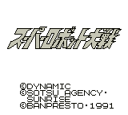

Super Robot Wars (VGB)

This is your typical war strategy simulation. You get to choose from
three teams of famous mechas. Team one is the Gundam team. Team two is
the Mazinger Z team including Mazinger, Great Mazinger, Aphrodite-A, and
Diana-A. Team three contains Shin Getter Robo, and the Shin Getter 2,
some female robot, and Texas Jack. -- from Susano Orbatos
Super Robot Wars 2G (VGB)
![[Super Robot Wars 2G]](images/GB/sr_wars2.gif) This is your typical war strategy simulation where you get to control some
of anime's most famous mechas from Gundam and similar shows.
This is your typical war strategy simulation where you get to control some
of anime's most famous mechas from Gundam and similar shows.
Return to Emulator Table of Contents
Last Modified 18 March 1997
Created 11 March 1997
Luis A. Cruz
cruzl@ccs.neu.edu